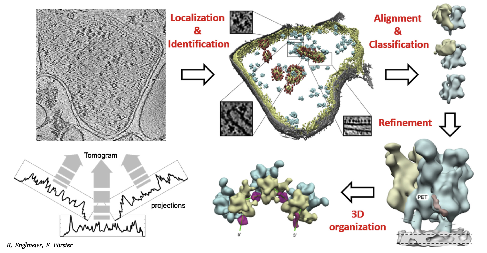

About Me

Education
M.S. Biology: Structural Biology (Anticipated Spring 2024)
California State University, East Bay
SLAC National Acceleratory Laboratory
Stanford Univeristy
B.S. Biology: Cell and Molecular Biology
San Francisco State University
Research Interests:
I am fascinated by the structural biology of diverse biological systems, including human mitochondria, Golgi, peroxisomes, and exosomes (EVs), and their potential as targets for patient-specific therapeutics. Additionally, I am intrigued by using bacterial, human, and plant vesicle tracking and bacterial membrane self-assembly to develop novel drug delivery systems. Furthermore, I am interested in identifying and designing potent binding molecules to viral proteins for combination cocktail therapy against viral infections. Through my research, I aim to understand the structural mechanisms that govern these biological systems and contribute to developing effective therapeutics.
- Structural Biotechnology
- Crystallography
- Macromolecular Structure: Protein Expression, Protein purification and analysis, Protein crystallization
- Cryogenic Electron Microscopy (Cryo-EM)
- Time-resolved Cryogenic Electron Tomography (TR-Cryo-ET)
- X-ray Free Electron Laser (XFEL) technology
- Integrated multi-dimensional biomarker profiling
- Drug Discovery
- Biophysics
- Bioengineering and Therapeutic Sciences
- Cancer Biology
- AI/ML-based protein design
Publications: Research Papers
Research

Project III: MS Thesis
TBD
Project II: Deciphering Neuropathogenesis in Neurodegeneration, Cancer, and Infectious Diseases: Pioneering Novel Therapeutics and Diagnostics
Theme: Time-Resolved Structural Analysis and Advanced Imaging Techniques for Disease Investigation and Therapeutic Development
Summary: In line with my research interests in structural biology and medicine, this multifaceted project focuses on employing state-of-the-art techniques, such as time-resolved x-ray crystallography and cryogenic tomography, to gain a deeper understanding of protein dynamics in response to ligand binding and enzymatic reactions. The insights derived from this research will inform the design of more effective therapeutics for various diseases. Additionally, the project involves exploring the roles of organelles in cellular function and disease, with the goal of developing novel microscope technology integrating nanofluidics to enable high-resolution imaging of organelles in live cells.
This project encompasses a diverse range of works, including poster presentations, talks, and publications. It aims to address important topics such as viral oncogenesis, Golgi apparatus dysfunction, and ribozyme mechanisms. Key achievements include presentations at prestigious conferences, such as the AACR-JCA Joint Conference and Cells 2023, as well as keynote speeches at Chemistry 2022 and Cancer Webinar 2022. Furthermore, the project has resulted in several publications in reputable journals, such as Viruses, Preprints, ResearchGate, and the International Journal of Molecular Science, covering topics such as host-pathogen interactions, organelle structural biology, RNA-dependent RNA polymerase dynamics, and epitope-based vaccines.
Overall, this project is dedicated to advancing the fields of biology, biochemistry, microbiology, and immunology through the dissemination of our findings, ultimately contributing to the development of novel therapies for diseases such as cancer, neurodegenerative disorders, and infectious diseases.
Posters
- Gómez DJ. AACR-JCA 2022 Poster / "Co-infection and cancer: Viral oncogenesis in humans result in liver, blood, and brain cancer by host-pathogen interactions" Poster presentation at 12th Annual AACR-JCA Joint Conference. (2022, Virtual)
Talks
- Gómez DJ. "Pioneering Organelle Structural Biology" at Cells 2023: Cells, Cells and Nothing but Cells: Discoveries, Challenges and Directions Author & Presenter. Abstract Publication / Slides (2023, Virtual).
- Gómez DJ. "Unraveling the Structural Dynamics of HPgV-1 NS5B Using Computational Methods" Grand Slam 2023 (2023, Virtual)
- Gómez DJ. "Cancers: PCNSL outcome in EBV+/HIV Coinfection and HTLV connection in HIV/AIDS patients" Drexel University College of Medicine (2022, Virtual)
- Gómez DJ. "HTLV Introductory Presentation" CSUEB Seminar (2022, Virtual, In-person)
- Gómez DJ. "Basic Research Presentation - HTLV-1 Intasome Structure" CSUEB Seminar (2022, Virtual, In-person)
- Gómez DJ."Chemistry 2022: Ribozyme Mechanisms and Clinical Gene Therapy" Keynote Speaker at Chemistry 2022, Global Virtual Summit on Chemistry & Pharmaceutical Chemistry. (2022, Virtual)
- Gómez DJ."A Human Retrovirus in Neuro-Oncology, Interventional Conductome Studies, and Theranostics in Nuclear Medicine" Keynote Speaker & Chairperson at Cancer Webinar 2022, 5th International Webinar on Cancer Research and Oncology. (2022, Virtual)
- Gómez D."Data Driven Discovery of Computational Biology and Modern Molecular Biology". Invited talk at CSU Northridge (2022, Virtual)
Publications
- Gómez DJ*. (2023) 'Untangling the Microscopic World of Organelles, Cells, Tissues, and Organs: A Focus on the Dysfunctional Golgi Apparatus in Disease Research †'. Biology and Life Sciences Forum.
- Gómez DJ, Sandel G, Joseph J, Kulkarni R, Maher S, Sharma R, and Jain P*. (2023) 'Epitope-Based Vaccines and Immunotherapy for Infection-Related Cancers in People Living with HIV: Current Status, Challenges, and Future Directions' Frontiers in Microbiology. (In prep.)
- Gómez DJ* and Borja M. (2023) 'Ribozymes as Precision Weapons: Revolutionizing Gene Therapy for Incurable Diseases' International Journal Molecular Science. (In prep.)
- Gómez DJ*.(2022) 'Unraveling the Structural Dynamics of Human Pegivirus-1 RNA-Dependent RNA Polymerase Using Computational Methods'. ResearchGate.
- Gómez D* (2022) 'Pioneering Organelle Structural Biology: Golgi Apparatus Dysfunction in Parkinson’s Disease, Neurodevelopmental Disorders, and Cancer'. Preprints. 2022100383.
- Gómez DJ+, Mulherkar T+, Sandel G, and Jain P*. (2022) 'Co-Infection and Cancer: Host–Pathogen Interaction between Dendritic Cells and HIV-1, HTLV-1, and Other Oncogenic Viruses'. Viruses.
Project I: Undergraduate Research Opportunities Program (UROP)
Title: Interleukin-17 Production in CNS by Infiltrating T Cells and Glial Cells in the HIV-1-Infected Brain
Summary: Despite effective combined anti-retroviral therapy (cART) for HIV-1-infected individuals, neurocognitive complications persist in patients, leading to negative impacts on daily functioning. The central nervous system (CNS) is affected in multiple ways during HIV infection, as HIV-infected cells cross the blood-brain-barrier (BBB) and initiate events causing CNS damage and neurocognitive problems. This study aims to investigate the role of interleukin-17 (IL-17) in HIV-associated neurocognitive disorders (HAND), as IL-17 can disrupt the BBB. The researchers will analyze brain specimens and cerebrospinal fluid (CSF) samples from HAND patients with HIV encephalitis (HIVE) and compare them to samples from HIV-infected individuals with normal cognition (NC). The hypothesis is that IL-17A will be found in subcortical structures, specifically in the medium-spiny neurons of the basal ganglia and interneurons in the hippocampus, and that astrocytic secretion of the TH17 cell chemokine (CCL20) and cytokine (IL-17) will be detected in CSF samples of HAND patients with HIVE.
Proposal
- Gómez DJ*, Shiramizu, B. (2013) 'IL-17 in HIV-1-Infected CNS'. 28 Mar. 2013. JABSOM, UH Mānoa, Honolulu, HI. TRMD499: Directed Research and Reading.
Contact
Email:
gomezscientist0@icloud.com
Address:
25800 Carlos Bee Blvd, Hayward, CA, USA
2575 Sand Hill Rd, Menlo Park, CA 94025